Scripting & Tooling
Menengah
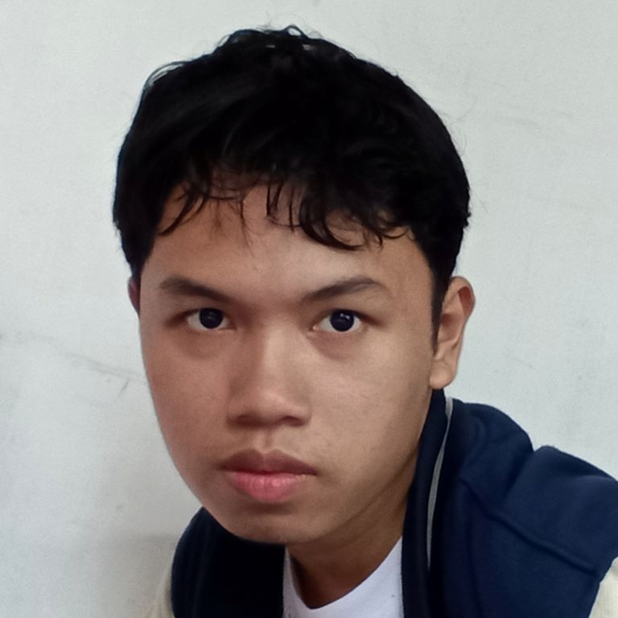
"Quick Learner, Teliti, Giat baca dokumentasi"
Seseorang yang tertarik untuk berkarir di bidang IT khususnya software development. Memiliki pengalaman dalam memecahkan suatu masalah, analisa, mengelola, dan uji coba proyek untuk merancang sistem yang aman dengan skalabilitas tinggi
Scripting & Tooling
Menengah


Backend
Junior
Frontend
Junior

Linux & Devops
Beginner
Selain itu saya juga memegang prinsip Test driven development
To be added
Go
Postgresql
Scala
Docker
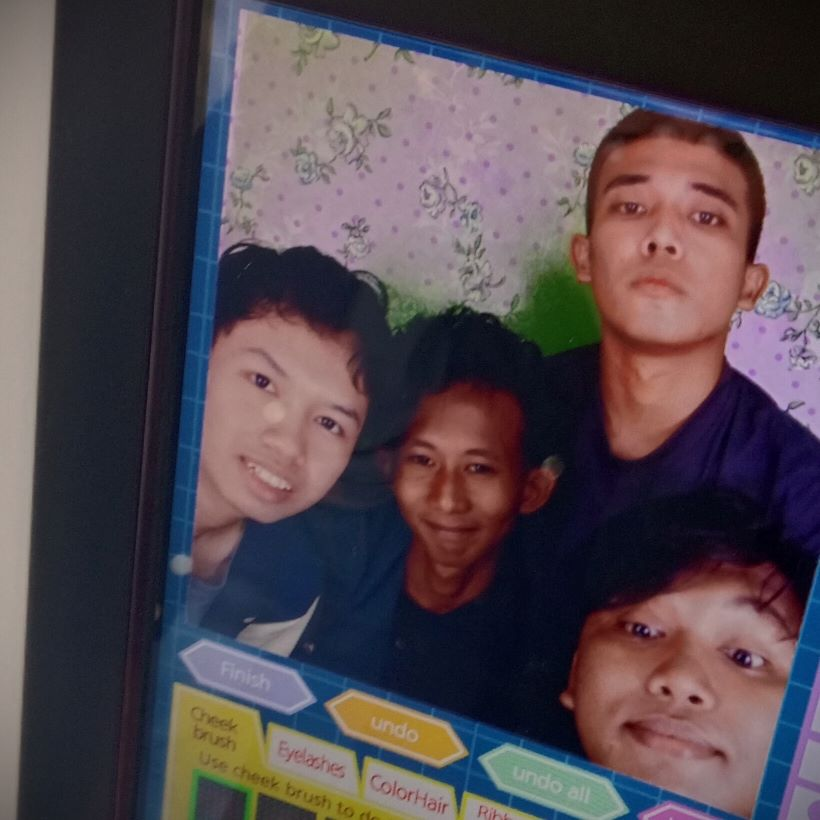
outside of work, i genuinely enjoy the company of my friends. So much so that it's almost like a life goal for me to try keep my relationship with them alive for as long as possible because there is just something special about a group of people with their own stupid jokes. Time passes, it is only normal for everyone to move on...
But i stayed...
i wanted to tell them how much i value our friendship.
I wanted to tell them how much i miss our laughter
I wanted us to face the world together, even for eternity
Because in the end, i believe that's what makes life beautiful
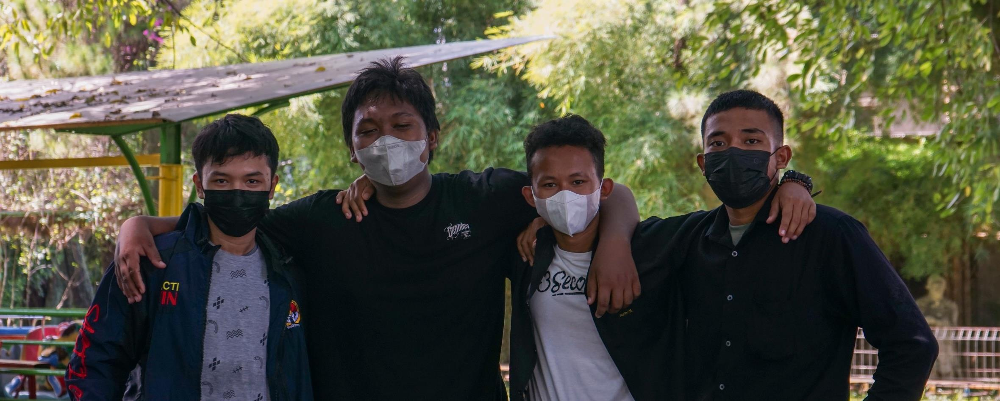
3 years (actually 1.5 due to Covid) is too short of a time for anything meaningful
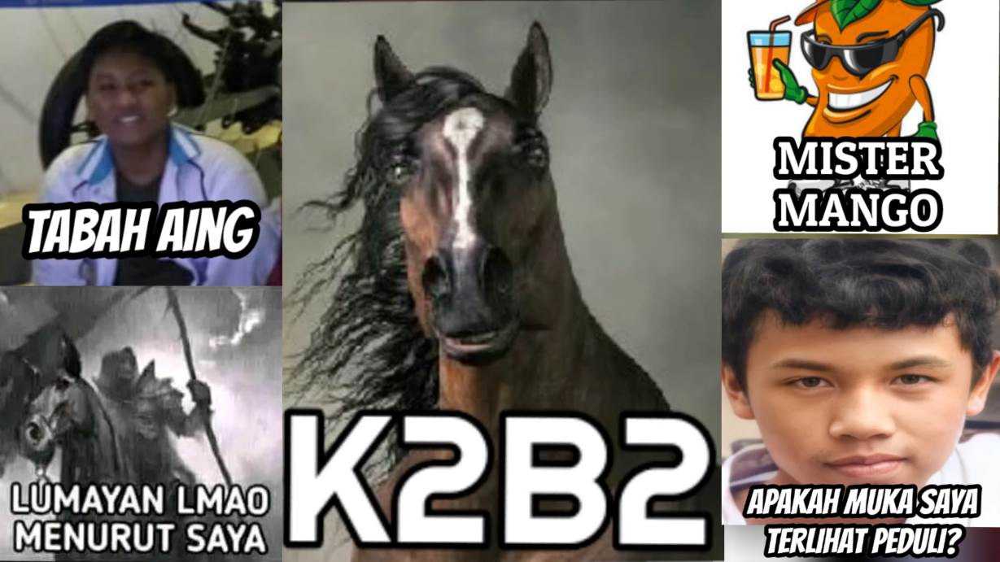
but for me, even that one month in group chat after school graduation was all i could ask for in life
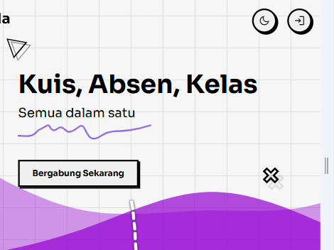
TazulaManage kelas, absen, kuis dan penilaian
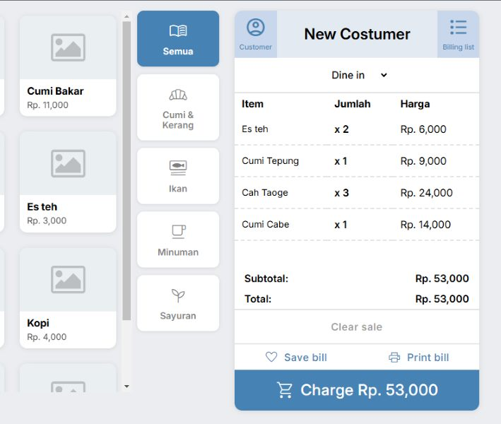
Point-of-Sales (Kasir)aplikasi kasir dengan fitur cetak struk
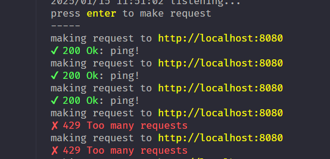
perisaisuper basic rate-limiter middleware
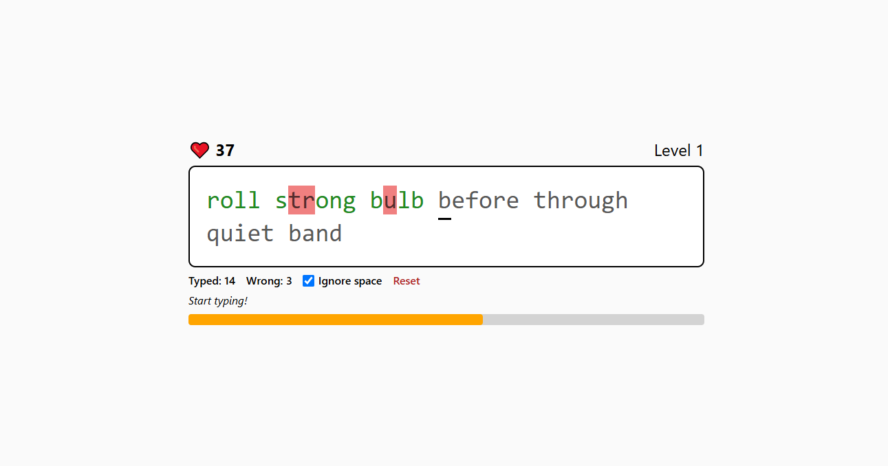
typing gamegame sederhana untuk menguji kecepatan ngetik
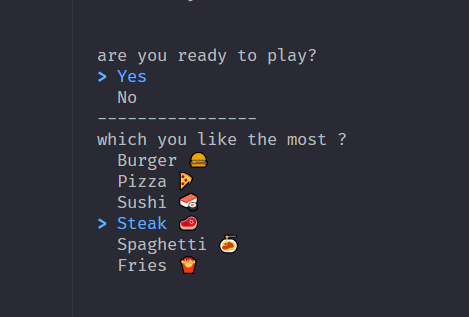
vivibeberapa helper buat mengambil input dari terminal
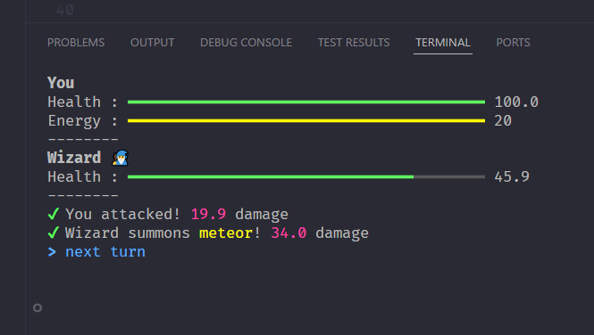
term-rpgsimple terminal rpg game
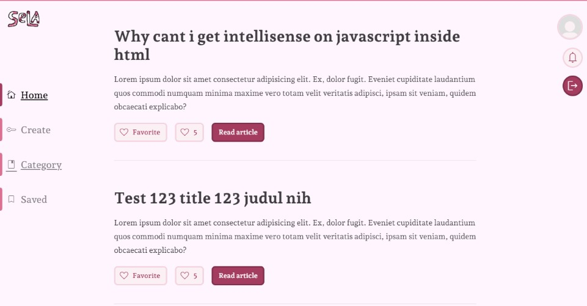
selaPlatform menulis artikel
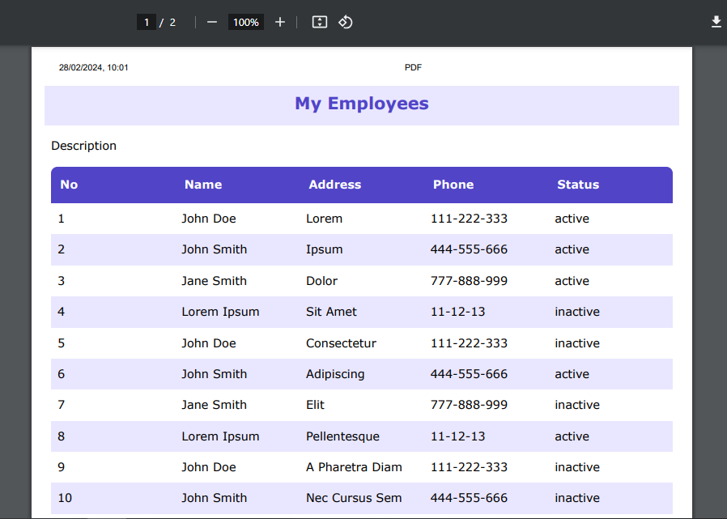
STOVEMembuat tampilan tabel dari file csv
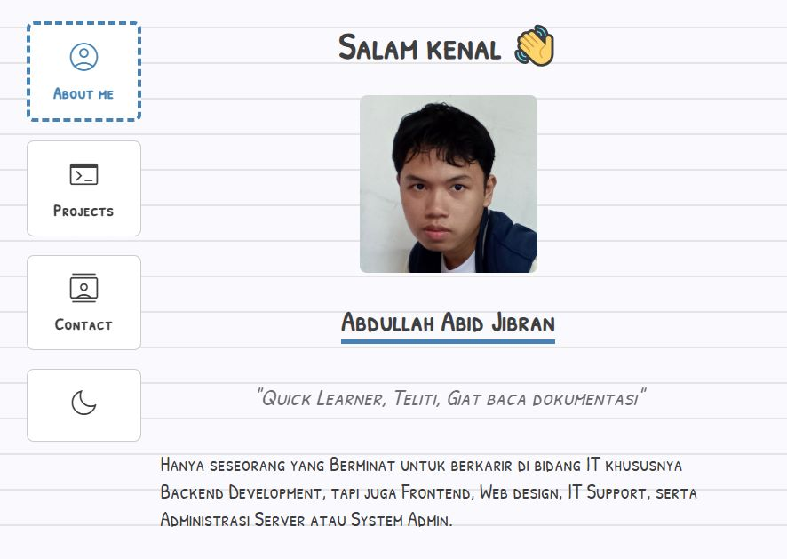
Personal PortofolioWebsite ini
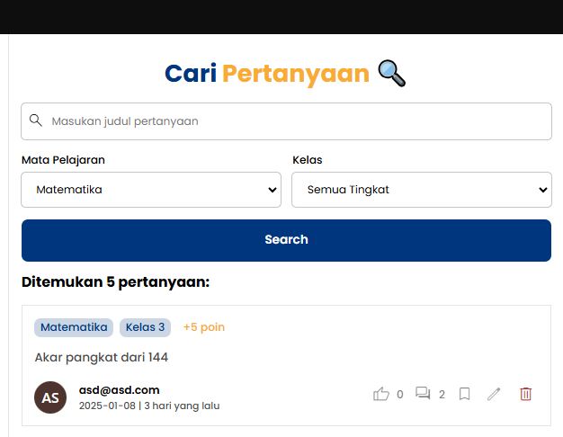
Tanya jawabAplikasi web untuk bertanya & menjawab
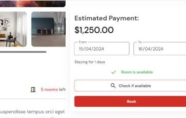
InnOneRepositori saat belajar Go (web)
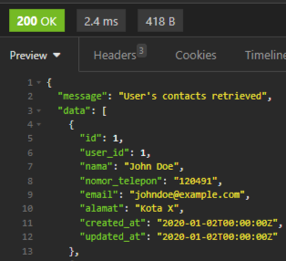
Contact API (learning)Repository saat belajar RESTful API. Minim dependensi.
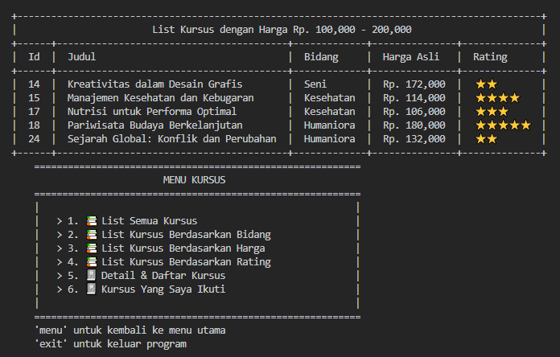
Simulasi Pendaftaran KursusProyek penilaian akhir matkul dasar pemrograman